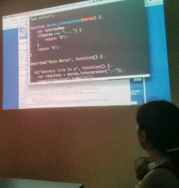
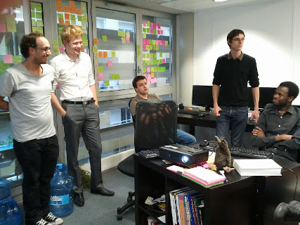
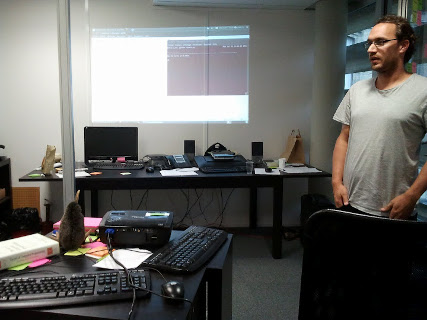

Okiwi est une communauté ouverte de praticiens en informatique située à Bordeaux. Ouverte parce
que nous ne donnons pas de limites à notre curiosité. L’activité de l’association dépendra de ce que chacun
y apportera.
Nous organisons entre autre :
Les coding dojos sont des sessions amusantes et intenses pendant lesquelles des développeurs améliorent leurs compétences en programmation. Okiwi organise 2 coding dojos par mois.
L'Agile Tour Bordeaux est un d’événement à but non lucratif, qui vise principalement à promouvoir massivement l'Agilité. Okiwi organise depuis maintenant 6 ans l'Agile Tour Bordeaux.
Le Geek Camp est une rencontre entre informaticiens qui se déroule sur un week end en septembre. Présentations, lightning talks, séances de code, discussions, vin, bières et barbecues étaient au programme des éditions précédentes !
Les TTFX sont des manifestions digitales prenant la forme de conférences, ateliers, ou hackathon. Elles sont pilotées par la communauté qui est libre de choisir les sujets abordés. Les conférences ont lieux tout les 3 mois, les ateliers sur demande, et code of war tous les ans. Participez !
Okiwi existe depuis 10 ans. La communauté décide de contribuer bénévolement au développement de l'association. De ce fait, l'ensemble des activités de l'association sont gratuites. Néanmoins il est possible de soutenir l'association et d'adhérer pour devenir membre cotisant.
Des coding dojos, sessions amusantes et intenses pendant lesquelles des développeurs améliorent leurs compétences en programmation. Le principe est simple , on prend un exercice de programmation, on choisit un langage, et on essaie de coder une solution en respectant les 4 règles du design simple de Kent Beck: